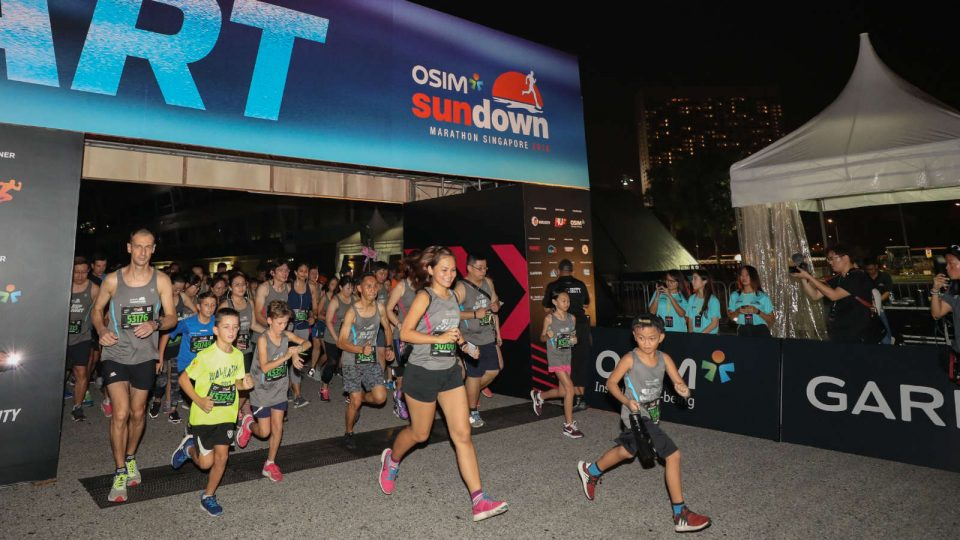
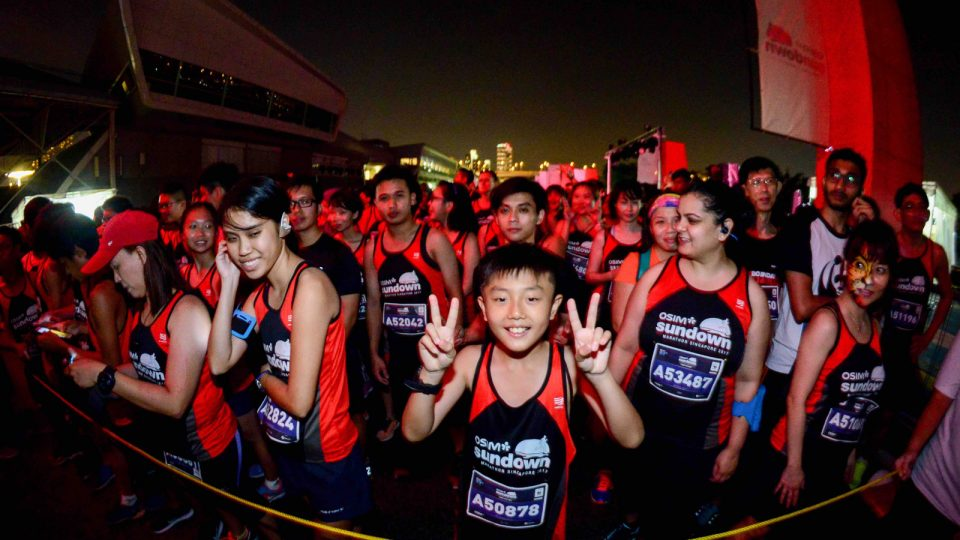
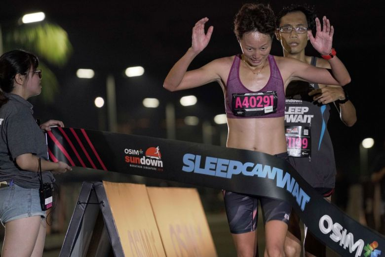

Sundown Marathon which begins in Singapore in 2008 will expand its footprint in China
and to the US in 2019. As Sundown partners with more event organisers around the
world, it hopes to leverage on the strength of its partners and race organisers to enhance
the experience of its local and international participants.
Asia’s biggest night run, OSIM Sundown Marathon is set to return to Singapore on June 1,
2019, under the new event management of Infinitus Productions. Bringing a fresh
perspective to Asia’s biggest night run, the team will preserve the unique characteristics
that make the race a favourite amongst the running community, and yet expand its focus
to highlight inclusivity in sports.

Reflecting on the brand’s success, Max Phua, Director, F4U Pte Ltd says, “the OSIM
Sundown Marathon Singapore is our flagship event and we are happy to partner Jeffrey
Foo, Director of Infinitus Productions Pte Ltd who was one of the co-founders of Sundown
Marathon when we first started.”
“We are thrilled to be working with F4U again and to continue our journey on Sundown
Marathon. We look forward to contributing our experience and expertise to this well-loved
and established race and to create an unforgettable experience for our runners, returning
and new ones alike,” says Jeffrey Foo, Director of Infinitus Productions Pte. Ltd.

This year, the OSIM Sundown Marathon Singapore also aims to champion the cause of
inclusivity in sports and the wider community and Infinitus Productions will lead by
example and contribute funds to the ongoing charity initiative, Sundown with Love. Some
of the beneficiaries include the Singapore Disability Sports Council, The Straits Times
School Pocket Money Fund and RunningHour. For every race slot purchased, $1 of the
registration fee will be donated to the adopted beneficiaries, and runners will also have the
opportunity to donate additional funds to the causes via the official event website.
Phua further commented, “we are really pleased that we can promote sports inclusivity via
our brand. We are proud that Infinitus Productions is aligned with us on our objectives as
we expand further afield, creating footprints in Southeast Asia, China and to the US.”
Sundown’s partner in China will also implement a plastic plan that aims to reduce plastic
waste by 50 percent during such races. “Low carbon represents a healthier, safer, more
natural, and more environmental friendly lifestyle. And we are incorporating this lifestyle
into Sundown. We hope Sundown China is not only a brand or a race for participants, but
also a lifestyle that can make the world a better place,” Zejin Jiu, Busines Director,
Sundown China.
“We hope to spread the excitement around Sundown’s races globally to inspire more
people to live a healthy lifestyle and share the joys as a Sundown Running Community,”
Max Phua, Director of F4U Pte Ltd.

“The overwhelming response that Sundown has acquired over the years is testament that
not only are we appealing to the local running scene, but to runners from across the
globe. This support has encouraged us to grow the brand on an international level,”
Ryan Chioh, Director of F4U Pte Ltd